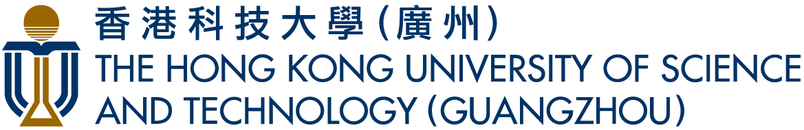
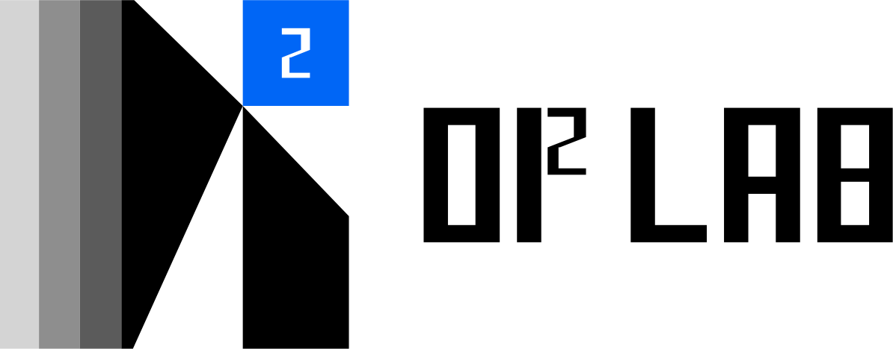

香港科技大学（广州）
Di² Lab · 深度交叉智能实验室DI² LAB · 组会分享 · 2026 年 10 月
实习 · 秋招 · 面试
开场
一是求职阶段的经验教训：例如字节 · 飞书大模型的面试，项目和业务聊得顺利，但最后一道 Medium 算法题没有做出来，最终还是没通过。
二是面试官视角：目前工作中参与实习与校招面试，介绍面试官实际在考察什么、哪些表现是加分信号。
PART 1 · 投简历 ①
注：港校（含中外合办）毕业时间与内地「应届生身份」认定，各公司口径不一，投递前按目标公司校招页自查。
PART 1 · 投简历 ②
海投不是不能用，但不要只依赖海投。
PART 1 · 投简历 ③
PART 1 · 加餐
从 EMNLP 到入职的完整时间线
PART 2 · 简历
一句话讲清楚业务是什么、要达成什么。
简历第一轮读者是 HR 与关键词系统；一句话讲不清业务，往往说明你还没吃透它。
你怎么把问题拆成中间的关键节点。
面试官未必懂你的领域，但他一定懂拆解——这才是他真正在买的东西。
有基线、有业务意义的结果：相对谁提升？省了多少人力 / 成本？
裸数字没有意义，基线 + 业务含义才有。
PART 2 · 简历 · 实操
金融问答场景中长尾问题识别差，用户问 A 答 B一句话业务背景：场景 + 痛点
拆成三步：长尾 case 挖掘 → 指令数据构造 → 离线 / 在线评测体系面试官会沿着这条线逐段深挖，每段你都有得讲
长尾集合 F1 +6.8pt（基线：原线上模型）；上线后该场景人工客服转接量 −23%有基线、有业务含义的结果（数字为示意）
PART 3 · 面试 ①
它是及格线，不是加分项。
PART 3 · 面试 ②
coding agent 已能替代我工作中绝大部分代码任务——纯「会写代码」正在快速贬值
花在对齐会 / 拉通会上：产品、运营、其他算法团队——解决问题前先对齐问题
轻则项目延期；重则线上事故——大家以为对齐了，分头去做，最后对不上
面试官在考察什么
怎么准备
PART 3 · 面试 ③
表现：不断追问细节、挑战你的方案、让你现场改设计
解读：面试官在花自己的时间成本把你的真实贡献挖出来——这是感兴趣的表现。从我的经验看，遇到深挖式压力面，通过概率反而高。
✅ 大概率是好消息表现：贬低你的成果、服从性试探、全程负反馈
解读：和「深挖」不同——打压不产生信息，只产生压力。它既是面试题，也是这个团队文化的照妖镜：面试如何对你，入职后就如何对你。
⚠️ 既是考题，也是你筛公司的信号表现：聊得轻松愉快、没有追问、提前结束、客套收尾
解读：对方已经停止评估你了。深挖才是购买意向；和谐愉快聊完，往往才是危险信号。
🚨 危险：大概率已出局「我聊完觉得这个人不行时，整个沟通过程会变得非常和谐愉快——然后把他挂掉。」——追问细节是感兴趣的信号，刻意打压则要警惕。
PART 4 · 拿到实习之后